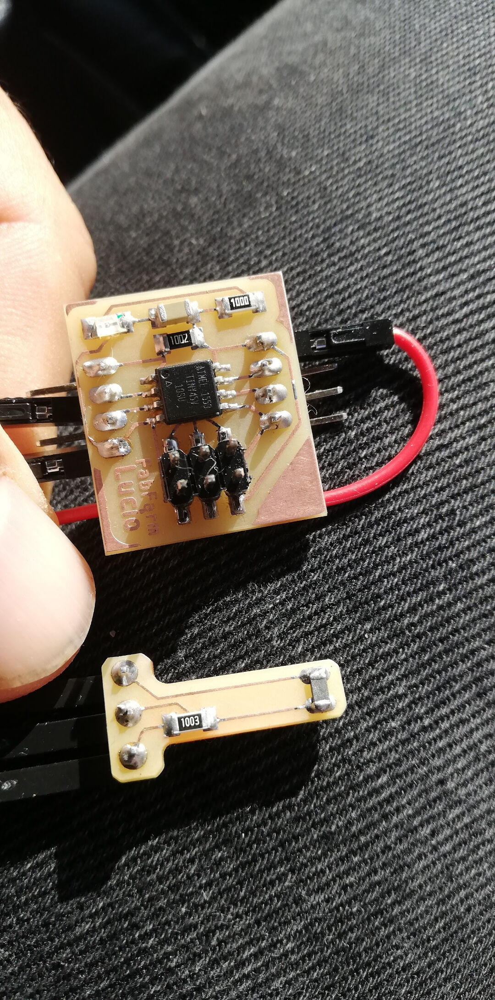

Wildcard Week
Individual assignment
- Design and produce something with a digital fabrication process (incorporating computer-aided design and manufacturing) not covered in another assignment, documenting the requirements that your assignment meets, and including everything necessary to reproduce it. Possibilities include but are not limited to wildcard week examples.
Learning outcomes:
- Demonstrate workflows used in the chosen process
- Select and apply suitable materials and processes to do your assignment.
Have you:
- Documented how you made your creation
- Described problems and how you fixed them
- Included your design files and 'hero shot' of the result
Tools used
- Old Electric fryer
- Wire cutter
Software Used
- Arduino IDE
Introduction
On Molding and casting week I had a problem. I needed machinable wax quickly. I had not ordered it ahead and and judging by other consumables delivery time I would not receive in time at a reasonable cost.
So my decision was easy, on this week's assignment, I will be making a machine that helps me make my own machinable wax.
So yes I will be using the knowledge aquired in the previous weeks and even some of the hardware to achieve a digitally manufactured machinable wax.
Safety first
Read this first!! Extracted from Shamrock Candles website and lightly modified.
Can paraffin wax catch fire? Yes, highly-flammable paraffin wax generally ignites at the following temperatures, depending upon its melting point, and the hardeners you mix into it:
- Paraffin wax without additives: 199°C (390.2°F).
- Paraffin wax with additives: 249°C (480.2°F).
Because of additives used in the process we are doing, the mix will exceed 100 degrees, using a double-boiler, which prevents wax from exceeding the temperature of boiling water, becomes impossible.
So in my project I don't want to use open flame (gas stove, etc...). The flammability of paraffin causes a problem, when melting wax directly on the stove. Watch for signs of overheating: candle wax turns brown, smells bitter, smokes and sizzles, some time before it approaches the point of auto ignition.
How to Put out a Paraffin Wax Fire
So, if parafin (or candle wax) combusts, how do you extinguish the fire? Do not pour water over burning wax. This impulsive action might be the first thing one thinks of, but this simply accelerates the fire, and causes an explosion. Instead, switch your electricity mains off. Stick a lid onto the pot with the flaming wax. This smothers the flames, and causes the fire to die down naturally.
The process of building the machine and making the Machinable Wax:
1-What I learned from input devices
On Input Devices I made a thermometer so I wanted to use it to take the temperature reading and order to activate deactivate the heater resistance and obtain controlled temperature

2- The code used
The code I used is for a reflow soldering oven and it required minimum changes to perform the test.
The problem was the size it was too big and in other to use it on the attiny44 it loses software serial so I had to use an Arduino instead. Luckily Zaggo the author had a debug mode and all went flawlessly.
I could then use his debug mode to view the changes in temperature.
The project of the reflow oven can be found on github.
3- The build process
You will be amazed what you can find in the trash.
Of course my dumpster diving impulses are much contained now on times of a pandemic but hopefully one day I will be able to go back to one of my preferred activities.
So some time ago I found this fryer
The brand is UFESA and I couldn't find much information outline except some 2nd hand websites from south Asia
In malasya it sells used for around 20 Euros :)
Tuning it upside down I opened the first cover, there athe mains cable could be reattached as the original was cut.

The second cover revealed much more interesting stuff, lets see:
- a lever that is connected to some type of current adjusting mechanism I couldn't identify.
- a temperature fuse
- the resistance
- a light bulb
I believe in the future I could have a servo atached to the lever or another way to adjust the max current.

The temperature fuse is rated at 228 degrees ading another level of safety to the project. Nice!
I couldn't find its datasheet but its part# is DNKD226P
The Heater resistance reads 30 amps so it was working as it matches its label (1600w 220V~)
I calculated it with the following formula:
R = Resistance (Ohms)
V = Tension (Volts)
I = Current (amps)
P = Power (watts)
I = P / V
I = 1600 / 220
I =~ 7.27 Amps (Thats the current drawn at 220 Volts)
R = V / I
R = 220 / 7.27
R = ~30.26 Ohms
This result matches the reading of the ammeter almost perfectly.
So with the previous information checked I could continue with the project without the fear of doing it for nothing if the resistance was broken. After all I found it in the trash.
Next I attached a thermistor with processor thermal paste and kapton tape.
The thermistor 100k was then soldered to my thermistor board replacing the smd thermistor I had done in Input devices.
In the below photo you can see:
- Mains plug;
- Thermistor board;
- Amp meter for future additional safety with current reading;
- Relay
- Arduino Uno
3- Making the wax
As a reference I read the following pages on how to make machinable wax
- Instructables
- Hackaday
- And this video
I liked the first page the most, they use a electric fryer and that makes all the difference in safety.
Ingredients:
- Paraffin Wax 80%
- Plastic Shopping Bags (HDPE or LDPE, Recycle symbol #4) 20%
I tried using HDPE first, it did not work well, it requires highter temperature and I ended up having to remove it as it would not melt so in my experience I advise using plastic bags (LDPE) symbol #4
Here you can see me placing entire bags, no need to cut them.
There is a lot of stiring needed, do it until you can't notice the solid plastic.
When you have an homogeneous mix add the coloring, not required. I used kids crayons.
It's nice to see the crayons getting mixed; watch until the end for the effect.
Pour the mix thruu a strainer, use a better one than mine.
Then last pour it into a mold. I unnecessarily placed this paper as I was afraid it sticking to the mold, it won;t stick to glass.
Sucess, Ready for machining! See results on molding and casting week